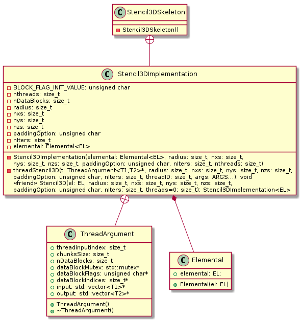
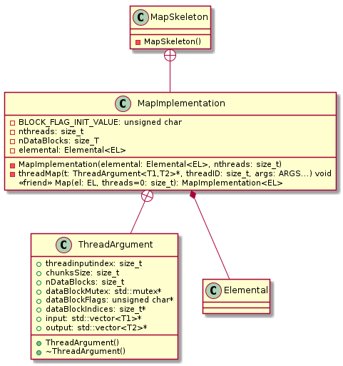

uml
Table of Contents
1 Stencil1D skeleton
2 Stencil2D skeleton
3 Stencil3D skeleton

4 Antonio's Map skeleton

5 skeleton usage
- two stages: initialization, execution
5.1 initialization: instantiate an object by call Stencil() (same name)
5.2 execution: call functor
6 skepu2 intro
- skepu2 is structured around source-to-source translator (precompiler)
- nested namespaces are not part of the api and should be considered implementation-specific.
7 skepu2 stencil interface design
MapOverlap(int radius, int radius, size_t stride, ...)
int x_radius: overlap radius in the x-directionint y_radius: overlap radius in the y-direction, used to deduce that an instance is 2d.size_t stride: stride- pointer to the contained type, pointing to the centre of the overlap region.
float conv(int overlap, size_t stride, const float *v, const Vec<float> stencil, float scale) { float res = 0; for (int i = -overlap; i <= overlap; ++i) res += stencil[i + overlap] * v[i*stride]; return res / scale; } Vector<float> convolution(Vector<float> &v) { auto convol = MapOverlap(conv); Vector<float> stencil {1, 2, 4, 2, 1}; Vector<float> result(v.size()); convol.setOverlap(2); return convol(result, v, stencil, 10); }